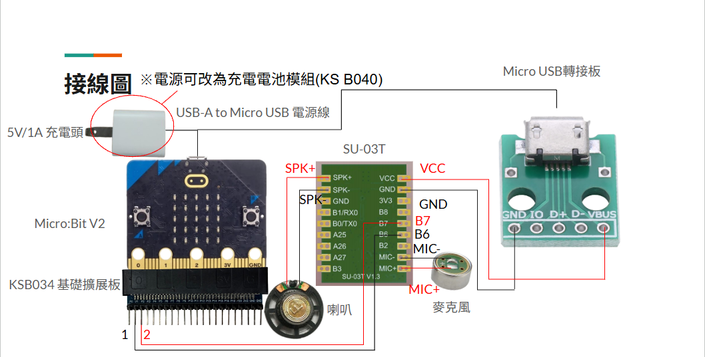

小橘喵藍牙聲控滑鼠
說明影片
程式下載 :
📄 Microbit程式下載網址
https://github.com/wen033codes/BT-Voice-controlled.git

小橘喵材料
- Micro:Bit V2 1片
- SU-03T(含喇叭、麥克風) 1個
- Micro USB 轉接板 1個
- 5V/1A充電頭 1個
- USB-A 轉 Micro USB 1對2電源線 1條
- 2.0mm(母) 轉 2.54mm (母) 杜邦線 2條
- KSB034 基礎擴充板 1個
- 充電電池模組(KS B040) 1個 ※可選